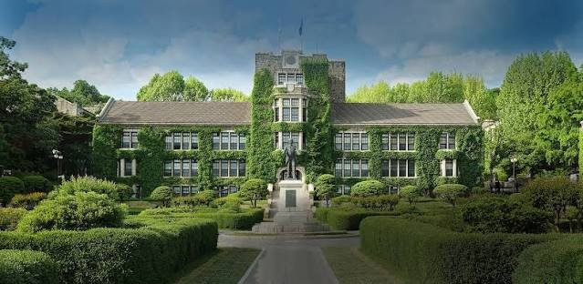

배움의 출발선을 하나로 잇는 다리
EDU:BRIDGE는 학교 밖 청소년과 연세대 학생 멘토가 6주 동안 함께하는 교육 멘토링 프로젝트입니다. 학습과 체험, 진로 대화를 지나 캠퍼스까지 함께 걷습니다.

궁금한 곳부터 들어가 보세요.
대면식부터 캠퍼스투어까지, 주차별 목표와 활동을 확인하세요. 다음 일정은 W1 대면식입니다.
누가, 언제, 어디서, 무엇을, 어떻게, 왜 — 육하원칙으로 보는 프로젝트.
매주의 활동과 사진, 체크포인트 기록.
진로 대화 질문 카드와 한 회차의 흐름.
EDU:BRIDGE를 만드는 멘토들.
마지막 주차 캠퍼스투어로 EDU:BRIDGE의 여정이 완성됩니다.
 EDU:BRIDGE
EDU:BRIDGE